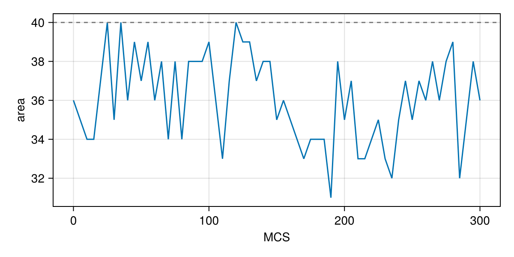
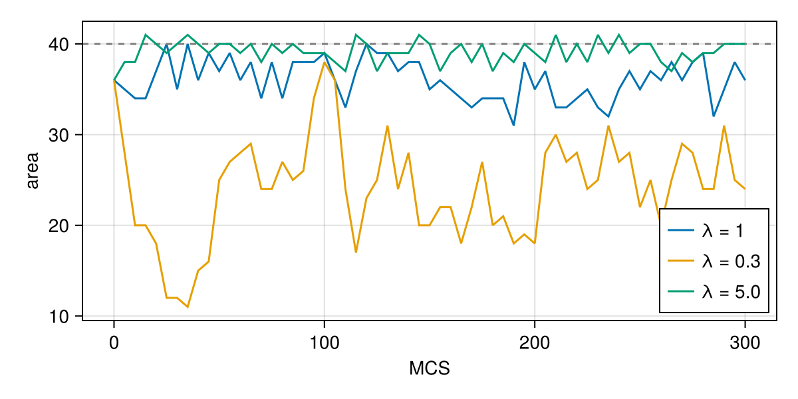
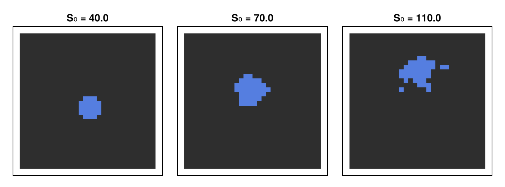
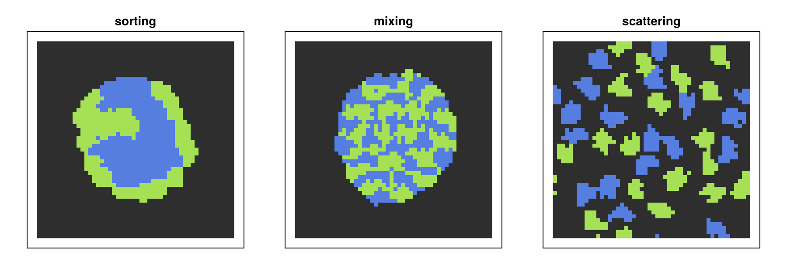
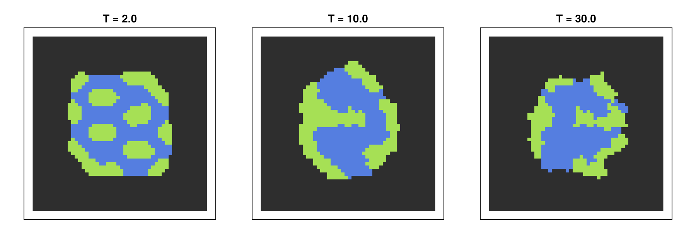

Tutorial 1: energies and adhesion
In a cellular Potts model, cells move and change shape only to lower the energy $H$. Everything a cell "wants" is written into $H$. This tutorial builds $H$ term by term. You will learn:
- how the area (volume) term keeps a cell at its size, and what its strength does;
- how a surface term controls the shape of a cell;
- how a table of contact energies makes cells sort, engulf or scatter;
- how temperature sets the amount of membrane fluctuation;
- the one-line library forms
Volume,SurfaceandAdhesion, and per-kind targets.
using Potts, MakiePotts, CairoMakieOne cell and its area
Start with a single cell in the medium. The model has an area term and a contact term with the medium:
@potts_model OneCell begin
@kinds medium cell
@parameters begin
λ = 1.0 # strength of the area constraint
V₀ = 40.0 # target area
λₛ = 0.0 # strength of the surface constraint (off for now)
S₀ = 60.0 # target surface
T = 10.0 # temperature
J[kind, kind] = [0 8; 8 0]
end
@lattice Lattice((30, 30); boundary = Periodic(), neighborhood = Moore(1))
@energy begin
cells(cell) => λ * (volume - V₀)^2 + λₛ * (surface - S₀)^2
contacts => J[kind, kind′]
end
@sweep Metropolis(; temperature = T)
end
@named one = OneCell()
start = layout(Tiling((6, 6); region = (13:18, 13:18), kinds = [:cell]), one)
prob = PottsProblem(one, start, (0, 300); seed = 1)
sol = solve(prob, SequentialCPM(); saveat = 5)The cell starts as a 6×6 square (36 sites) and grows to its target area of 40. sol[:volume] holds the volumes of all cells at every saved time; the first (and only) cell is element 1:
area(sol) = [v[1] for v in sol[:volume]]
fig = Figure(size = (600, 300))
ax = Axis(fig[1, 1]; xlabel = "MCS", ylabel = "area")
lines!(ax, sol.t, area(sol); label = "λ = 1")
hlines!(ax, 40; color = :gray, linestyle = :dash)
fig
The area fluctuates around $V_0$. A stronger constraint $\lambda$ holds it tighter. remake changes the parameter without compiling the model again:
for λ in (0.3, 5.0)
s = solve(remake(prob; p = [:λ => λ]), SequentialCPM(); saveat = 5)
lines!(ax, s.t, area(s); label = "λ = $λ")
end
axislegend(ax; position = :rb)
fig
The contact term charges $J = 8$ for every bond between the cell and the medium. A smaller cell has fewer such bonds, so the two terms balance a little below $V_0$. With a weak constraint the contact term wins and the cell can shrink away entirely. Try $\lambda = 0.1$.
The surface term and cell shape
surface is the number of bonds between the cell and its neighbours (here the 8 Moore neighbours of each boundary site). A target surface that is small for the area makes the cell round; a larger one makes it irregular, and a very large one tears it into pieces:
fig = Figure(size = (700, 260))
for (i, S₀) in enumerate((40.0, 70.0, 110.0))
s = solve(remake(prob; p = [:λₛ => 1.0, :S₀ => S₀]), SequentialCPM())
ax = Axis(fig[1, i]; title = "S₀ = $S₀", aspect = DataAspect())
hidedecorations!(ax)
pottsplot!(ax, renderframe(s.u[end]))
end
fig
At $S_0 = 110$ the surface term rewards boundary so much that the cell splits off fragments. Nothing in the energy keeps a cell in one piece; @constraint connectivity(cell) does (see Constraints).
Adhesion between kinds
With several kinds, the contact table $J$ decides who sticks to whom. Steinberg's differential adhesion hypothesis says that tissues sort like immiscible liquids. Here are three tables for a two-kind aggregate (rows and columns: medium, dark, light). The "sorting" table is the one of Graner & Glazier (1992); the rest of this model (smaller cells, a 50×50 lattice, a tiled start, 4-neighbour copies) is a generic teaching setup, not their model. For the paper's model, see Getting started and the GranerGlazier constructor.
| Table | dark–dark | dark–light | light–light | cell–medium | Outcome |
|---|---|---|---|---|---|
| sorting | 2 | 11 | 14 | 16 | dark inside, light outside |
| mixing | 14 | 2 | 14 | 16 | dark and light alternate |
| scattering | 14 | 14 | 14 | 4 | cells leave the aggregate |
@potts_model TwoKinds begin
@kinds medium dark light
@parameters begin
λ = 1.0
V₀ = 25.0
T = 10.0
J[kind, kind] = [0 16 16; 16 2 11; 16 11 14]
end
@lattice Lattice((50, 50); boundary = Periodic(), neighborhood = Moore(1))
@energy begin
cells(dark, light) => λ * (volume - V₀)^2
contacts => J[kind, kind′]
end
@sweep Metropolis(; temperature = T)
end
@named twokinds = TwoKinds()
start = layout(Tiling((5, 5); region = (11:40, 11:40), kinds = [:dark, :light, :light, :dark]), twokinds)
base = PottsProblem(twokinds, start, (0, 600); seed = 3)
tables = ["sorting" => [0 16 16; 16 2 11; 16 11 14],
"mixing" => [0 16 16; 16 14 2; 16 2 14],
"scattering" => [0 4 4; 4 14 14; 4 14 14]]
fig = Figure(size = (900, 300))
for (i, (label, J)) in enumerate(tables)
s = solve(remake(base; p = [:J => J]), SequentialCPM())
ax = Axis(fig[1, i]; title = label, aspect = DataAspect())
hidedecorations!(ax)
pottsplot!(ax, renderframe(s.u[end]))
end
fig
The rule of thumb: a kind pair that is cheap to keep in contact ends up in contact. When the cells stick to the medium more than to each other ($J_{cM}$ small), the aggregate falls apart.
For two kinds d and l the effective surface tensions are $\gamma_{dl} = J_{dl} - (J_{dd} + J_{ll})/2$ and $\gamma_{dM} = J_{dM} - J_{dd}/2$. Sorting needs $\gamma_{dl} > 0$; the kind with the larger $\gamma$ against the medium ends up inside.
Temperature
The temperature sets how often a copy that raises $H$ is accepted. At low $T$ the cells barely move and the tiled start stays frozen in place; at $T = 10$ the kinds sort; at high $T$ the boundaries are ragged and the sorting is noisier:
fig = Figure(size = (900, 300))
for (i, T) in enumerate((2.0, 10.0, 30.0))
s = solve(remake(base; p = [:T => T], tspan = (0, 300)), SequentialCPM())
ax = Axis(fig[1, i]; title = "T = $T", aspect = DataAspect())
hidedecorations!(ax)
pottsplot!(ax, renderframe(s.u[end]))
end
fig
Library one-liners
Common terms have one-line forms that expand to the same domain => expression pairs. This model is TwoKinds written with them:
@potts_model TwoKindsShort begin
@kinds medium dark light
@parameters begin
λ = 1.0
V₀ = 25.0
T = 10.0
J[kind, kind] = [0 16 16; 16 2 11; 16 11 14]
end
@lattice Lattice((50, 50); boundary = Periodic(), neighborhood = Moore(1))
@energy begin
Volume(dark, light; target = V₀, strength = λ) # cells(dark, light) => λ * (volume - V₀)^2
Adhesion(J) # contacts => J[kind, kind′]
end
@sweep Metropolis(; temperature = T)
end
@named short = TwoKindsShort()
short_prob = PottsProblem(short, start, (0, 600); seed = 3)
total_energy(short_prob) == total_energy(base)trueSurface(kinds...; target, strength) is the surface term. Use whichever reads better; the written-out form is the one to extend.
Per-kind parameters
A parameter can be indexed by kind, like J. Here dark cells are twice as big as light ones. V₀[kind] is a vector with one entry per kind, medium first:
@potts_model TwoSizes begin
@kinds medium dark light
@parameters begin
λ = 1.0
V₀[kind] = [0.0, 50.0, 25.0]
J[kind, kind] = [0 16 16; 16 8 11; 16 11 8]
end
@lattice Lattice((50, 50); boundary = Periodic(), neighborhood = Moore(1))
@energy begin
cells(dark, light) => λ * (volume - V₀[kind])^2
contacts => J[kind, kind′]
end
@sweep Metropolis(; temperature = 10.0)
end
@named twosizes = TwoSizes()
start = layout(Tiling((5, 5); region = (11:40, 11:40), kinds = [:dark, :light]), twosizes)
s = solve(PottsProblem(twosizes, start, (0, 200); seed = 1), SequentialCPM())
vols, kinds = s[:volume][end], s[:kind][end]
(dark = sum(vols[kinds .== 1]) / count(==(1), kinds), light = sum(vols[kinds .== 2]) / count(==(2), kinds))(dark = 47.388888888888886, light = 20.5)What you learned
- Every energy term is
domain => expression;cells(kinds…)sums over cells andcontactsover neighbouring pairs of sites in different cells. - $\lambda$ sets how tightly a cell holds its area; a surface term shapes the cell.
- The contact table decides sorting, mixing or scattering; the temperature sets the fluctuations.
- Kind-indexed parameters (
J[kind, kind],V₀[kind]) give each kind its own values.
The energy manual page lists every domain and the quantities each can read. Next, Tutorial 2 adds a chemical field.